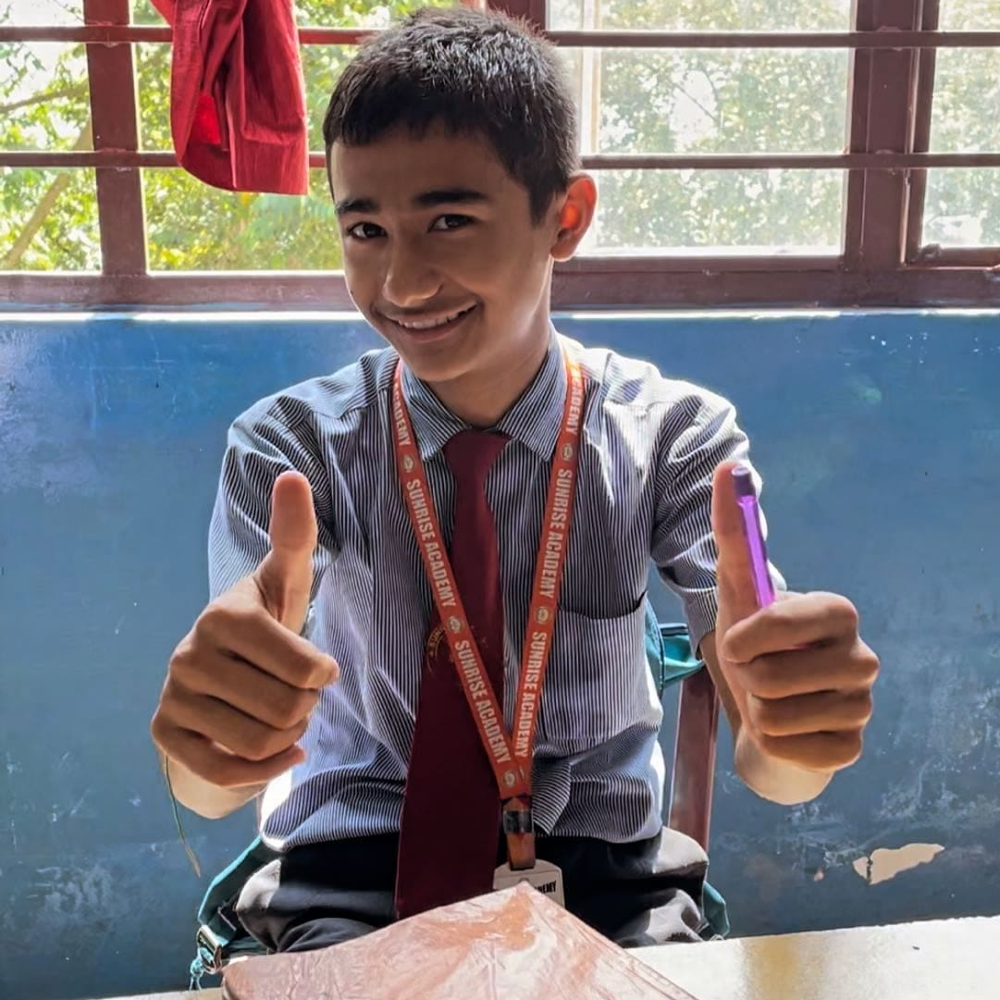

Class XI Science • Sikkim, India
Urgen Tenzing Gurung
CBSE State Merit Scholar, State-Level Orator & Emerging AI Builder
Hi, I’m Urgen Tenzing Gurung—a Class XI Science student from Pakyong District, Sikkim. Ranked among the Top 7 students across Sikkim in the CBSE Class X Board Examinations with 93.6%, I combine academic rigor and public speaking with hands-on exploration in coding, artificial intelligence, music, and algorithmic puzzles.
Education & Alma Mater
Govt. Secondary School Duga
Pakyong District, Sikkim
Board Examination
93.6% • CBSE Class X
School Topper & Top 7 in State
Key Honors
State Elocution Winner
Ek Bharat Shrestha Bharat & SCERT
Core Focus
Coding, AI & Science
Guitar • Speedcubing • Gaming
